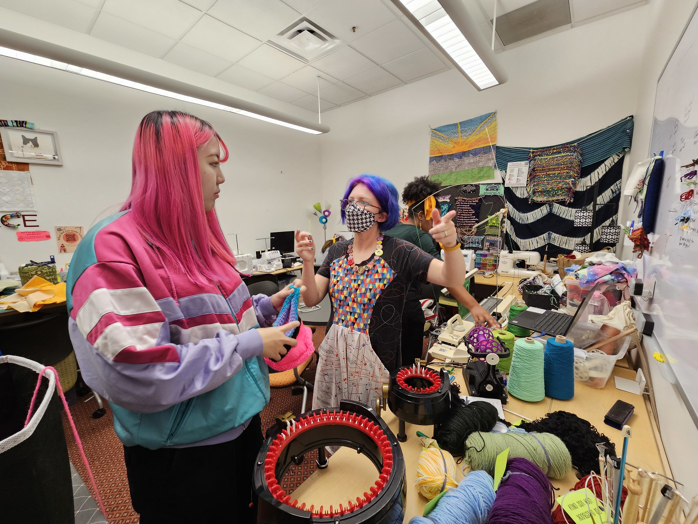

I have not been great at blogging lately, though I don't have Brandon Walsh's excuse of an infant around the house. Still, I read with interest his piece on Maximalist Digital Humanities Pedagogy a little while ago, and think I might have a few missing pieces to add to this discussion.
It's hard to find much to love about maximalist DH pedagogy via the list of traits he enumerates, including "many tools, few decisions", "more readings", "the greatest", "tech tech tech", "overwhelm". Some of the other points feel like a gray area that could be the basis for a different take on maximalist pedagogy: "dwelling only in possibilities", "no constraints", "no prior experience necessary", "yes, and".
Maybe it was that the picture Brandon chose illustrating "maximalism" resonated with my own visual aesthetic, but reading this piece made me recognize that, honestly, "minimalism" isn't my vibe in any context, ever. But my maximalism isn't "all the latest tools and tech and readings and assignments", either. So what is it?
I have to start by saying that my maximalism is only possible because of the unusual nature of my job, and the place I work. I'm not an adjunct with a crushing course load and huge classes. My biggest class ever was last fall's AI course, with 60 students, a co-instructor, and two TAs. I taught multilingual DH to 20 students in fall 2020, asynchronously. This quarter, I have 25 students in "Data Visualization with Textiles", but it's a one-credit independent study. My job is to support DH primarily within my department (non-English literatures) -- which includes hands-on project work, collaborating with grad students, matching people with resources, thinking and working on infrastructure (like OCR / HTR workflows) for multilingual DH and my department's other programs, and also teaching. In quarters when I'm teaching an intensive class, people are generally understanding if some of the project work takes longer. I'm in an incredibly fortunate position here, where I get to do a lot of different things that I love, where my work on projects and infrastructure informs my teaching, and vice versa.
In some sense, my job itself is maximalist. Maximalist jobs most often appear in bad forms: jobs with impossible expectations and an absurd scope. But I've had the good fortune to land in a maximalist position with a long history -- the Academic Technology Specialist program dates to the 90's. My department has had arguably the best track record with these roles, recognizing that different people bring different things to it, but it's a valuable contribution to the department in whatever form it takes. The job itself is "dwelling in possibilities" and "no constraints" and "yes, and" -- I support DH (defined very broadly) for the department. It's not "no experience necessary", but I came into it with basically no ability to code, and most of what I do day-to-day on a technical level anymore I've learned over the last few years. I love all these things about my job, and what they've enabled me to do: start a Textile Makerspace, teach project management using a D&D-style role-playing game, build non-English corpora, develop pedagogical materials using the Baby-Sitters Club books. Having a less-maximalist job would feel constraining; I think I'd suffocate in a faculty position where I was expected to develop a focused research agenda, write a book, and teach some core courses for several years.
I can tell a sensible story about the DH pedagogy landscape here, about how there's enough people who want exposure to some kind of DH training, and being the person who offers the one non-English-oriented text analysis class means that I owe it to the students to make the class work for whatever language they bring me. A minimalist approach would mean making decisions to support one set of languages and not another, and/or limit the scope to a certain set of methods. I do that to some extent (we don't cover digital exhibits, for instance) but I think of my non-English DH class as something like a scaled-up version of the project consulting I do for my grad students, except I can do it for students outside my department. How frustrating would it be to show up with a set of questions that you want to ask an expert, and instead they talk about something else? But because it's a class with usually 5-10 people, each with their own languages and interests, I try to find a way to make at least the methodological stuff interesting and thought-provoking for everyone, even if not every method makes sense for every student's intended project.
The #DHRPG class (Project Management and Ethical Collaboration for Humanists) has its own kind of maximalism: it's run as a simulation of a year in the life of a DH project, and stripping that experience down to a "minimalism" version, I believe, would do students no favors. The real world, and collaborating with real people, is messy and complicated. There have been other DH project management simulations (like DH Quest), but the choices necessary to turn the DH experience into something you can play as a simple web-based game inevitably strip it down to something that no longer resembles what it actually is. I want the students to be able to make choices for their character -- a broad universe of choices, including not working on the DH project at all -- and then for the whole project team to live with the consequences of these individual choices, all piled on top of one another. The difficulties and compromises that are unavoidable if you're going to work with real people and try your best to do right by them -- that's the biggest takeaway I want the students to leave with. I don't think you can get there through minimalism -- or if there's a path, I don't know it.
The Data Visualization with Textiles independent study takes openness and flexibility to the maximum. It's structured so most of the "class" is just the students spending time in the Makerspace, learning and exploring different equipment and techniques. There's a weekly check-in assignment, and a few others along the way (actually make a data set based on data you compile from your life! spend 90 minutes making a textile data visualization based on one of three data sets I give you!), but it's a lightly structured framework for students to actually make time to learn a craft. The crafts that speak to them vary widely: some are doing hand embroidery, some are sewing garments, some are doing crochet or weaving. There absolutely are more focused textile craft classes on offer at Stanford: in Theater and Performance Studies, there's a class focused just on developing a solid set of core sewing techniques. I'm very glad it exists; as a student, I would have hated it and quite possibly concluded that sewing wasn't for me.

The times I'm staffing the Makerspace during open hours it's wild: bouncing between several groups of students, helping each debug their problems just enough that they can move forward on their own, until they hit the next roadblock, while I work with someone else on their project -- sometimes involving an entirely different machine or craft. When I've spent a whole afternoon that way in the Makerspace, I feel completely wrung out but happy. And based on the students' midterm assignments, I've been really pleased with how this quarter has been going overall.
I describe these three classes I teach as examples of maximalism, as if there's some sort of well-considered pedagogical underpinning for why they are the way they are. I think I can do a reasonable job justifying them in an post-hoc way, but if I'm honest with myself, my classes are like this most of all because I'm like this, and I'm in a position where I can run my classes as I see fit.
Would I recommend maximalist pedagogy? Probably not, considering the circumstances under which most DH teaching takes place. If you don't have time and support and a lot of flexibility with the rest of your life, and ways to connect it with your other responsibilities, I can imagine adopting maximalist pedagogy the way I do it in my classes being a gasoline can on the fire of academic burnout. But for me, given my job, non-teaching responsibilities, and my way of existing in the world as a person, it's a beautiful thing, and I'm proud of what I manage to do with it.